6. Meteor M2-3 passes from home and getting an LNA working
Log for 2026-10-20. I moved the station to a new home near Viña del Mar, wrote a small pass predictor for that location, checked it against n2yo.com, and added a filter + LNA module in front of the dongle. The predictor matched n2yo to within a few hundredths of a degree. The LNA took two attempts: powered from the bias tee it did nothing, and powered from USB it added about 33 dB, which forced me to lower the dongle's gain from 38.6 dB to about 16.6 dB.
Setup
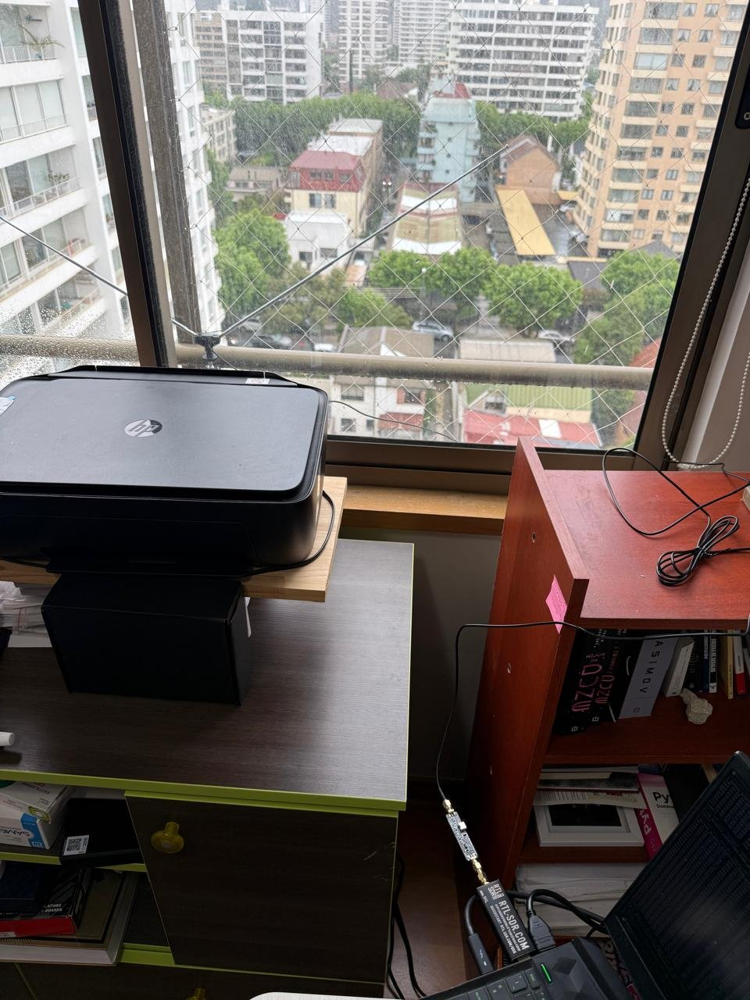
Signal chain: laptop → RTL-SDR Blog V4L → filter + LNA → coax → dipole on the window railing. The LNA sits directly on the dongle's SMA port.
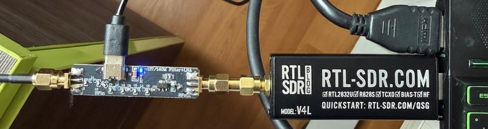
At first I assumed the board was a Nooelec SAWbird+ NOAA, because I had its datasheet in the project (41 dB of gain and a 2.6 MHz SAW filter centered on 137.5 MHz). The silkscreen says "137/140M Filter+LNA": a different, generic module with RFin (antenna), RFout (dongle) and a USB-C power input. The measurements below show it behaves quite differently from the SAWbird.
Predicting passes for my location
pasos.py (guide 3) computes for Santiago. For the new location I wrote
tools/predict_satellites_home_passes.py. It reads a TLE file, uses
Skyfield to find every pass above 10° in the next 3 days,
and prints the times in Chile's summer time (UTC−3).
from skyfield.api import load, wgs84, EarthSatellite
from datetime import timedelta, timezone
import sys
l = open(sys.argv[1]).read().strip().splitlines()
ts = load.timescale()
sat = EarthSatellite(l[1], l[2], l[0].strip(), ts)
obs = wgs84.latlon(-33.02, -71.55, 20) # home, rounded to ~1 km for this page
tz = timezone(timedelta(hours=-3)) # Chile horario de verano (CLST, UTC-3) desde sep 2026
t0 = ts.now(); t1 = ts.tt_jd(t0.tt + 3)
t, e = sat.find_events(obs, t0, t1, altitude_degrees=10)
cur = {}
for ti, ev in zip(t, e):
alt, az, _ = (sat - obs).at(ti).altaz()
cur[ev] = (ti.utc_datetime().astimezone(tz), az.degrees, alt.degrees)
if ev == 2 and 0 in cur and 1 in cur:
r, c, s = cur[0], cur[1], cur[2]
dur = (s[0]-r[0]).seconds
print(f"{r[0]:%a %d-%m} {r[0]:%H:%M}-{s[0]:%H:%M} max {c[0]:%H:%M} elev {c[2]:4.0f}° az {r[1]:3.0f}°→{s[1]:3.0f}° dur {dur//60}m{dur%60:02d}s")
cur = {}
Usage, from the project folder. First download a fresh TLE from Celestrak (57166 is Meteor M2-3, 59051 is Meteor M2-4), then run the script:
curl -s "https://celestrak.org/NORAD/elements/gp.php?CATNR=57166&FORMAT=TLE" -o tools/tle/m23.tle
PYTHONIOENCODING=utf-8 tools/venv/Scripts/python tools/predict_satellites_home_passes.py tools/tle/m23.tle
PYTHONIOENCODING=utf-8 avoids a Windows console error when printing ° and →.
Result: Meteor M2-3, 20–23 October 2026
TLE epoch 26293.305 (20 October, 07:20 UTC). Passes above 10°, local time (UTC−3):
| Day | Start – End | Max | Max elev. | Azimuth (rise → set) |
|---|---|---|---|---|
| Tue 20 | 22:38 – 22:48 | 22:43 | 43° | 152° → 10° |
| Wed 21 | 00:19 – 00:27 | 00:23 | 20° | 201° → 292° |
| Wed 21 | 09:55 – 10:05 | 10:00 | 44° | 37° → 179° |
| Wed 21 | 11:36 – 11:43 | 11:40 | 18° | 317° → 231° |
| Wed 21 | 22:16 – 22:24 | 22:20 | 25° | 139° → 29° |
| Wed 21 | 23:55 – 00:05 | 00:00 | 33° | 188° → 312° |
| Thu 22 | 09:32 – 09:41 | 09:37 | 27° | 56° → 167° |
| Thu 22 | 11:12 – 11:21 | 11:16 | 31° | 339° → 215° |
| Thu 22 | 21:54 – 21:59 | 21:57 | 15° | 120° → 54° |
| Thu 22 | 23:32 – 23:42 | 23:37 | 56° | 177° → 330° |
| Fri 23 | 09:11 – 09:17 | 09:14 | 16° | 78° → 152° |
| Fri 23 | 10:48 – 10:58 | 10:53 | 54° | 357° → 203° |
The best passes for LRPT reception are the ones above about 40°. Morning passes are in daylight (visible channels); evening ones only give infrared.
Checking against n2yo.com
n2yo.com showed Meteor M2-3 heading toward South America that morning, so I compared two of its screenshots with Skyfield at the same instants. n2yo places the observer from the IP address, which resolves to Santiago (−33.43, −70.57), so for the check I used that same point.
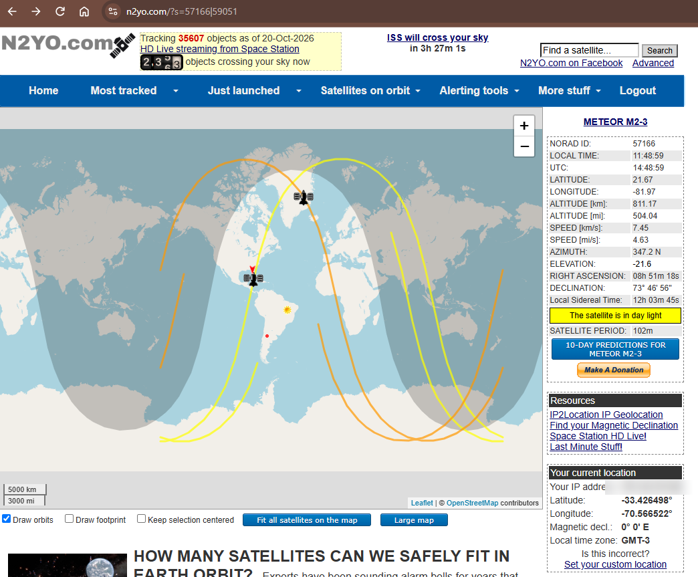
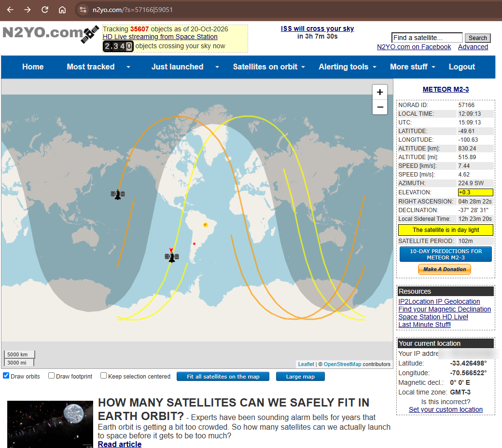
| Quantity | n2yo.com | Skyfield (same TLE day) |
|---|---|---|
| Sub-satellite point at 14:48:59 UTC | 21.67° N, −81.97° | 21.73° N, −81.96° |
| Elevation at 14:48:59 UTC | −21.6° | −21.7° |
| Sub-satellite point at 15:09:13 UTC | −49.61°, −100.63° | −49.55°, −100.60° |
| Altitude at 15:09:13 UTC | 830.24 km | 830.2 km |
| Elevation / azimuth at 15:09:13 UTC | +0.3° / 224.9° | +0.4° / 225.0° |
The two agree to within 0.06° in position and 0.3° in elevation.
The pass my table "missed"
That pass did not appear in my table, because it peaks below the 10° cut-off. With the threshold lowered to 0°:
| Observer | Rises | Max | Max elev. | Sets |
|---|---|---|---|---|
| Home (Viña del Mar) | 11:58:10, az 320° | 12:03:47, az 271° | 9.8° | 12:09:29, az 222° |
| n2yo IP location (Santiago) | 11:58:31, az 316° | 12:03:54, az 270° | 8.7° | 12:09:22, az 224° |
The ground track runs over the Pacific, about 2,400 km away at closest approach. It is a poor pass for reception, but it was happening right then, so I used it to test the LNA.
LNA test
Attempt 1: power from the bias tee
Recording the low pass
I turned on the dongle's bias tee with rtl_biast -b 1, with no USB cable on the board, and
recorded 8 minutes of raw IQ at 137.5 MHz, 2.048 MS/s and 29.7 dB of gain (lower than the
usual 38.6 dB, to leave room for the LNA):
python tools/capturar_iq.py grabaciones/20261020_1201_meteor-m2-3_lna_137500000Hz_2048000sps.cu8 --frecuencia 137.5e6 --sr 2048000 --ganancia 29.7 --segundos 480
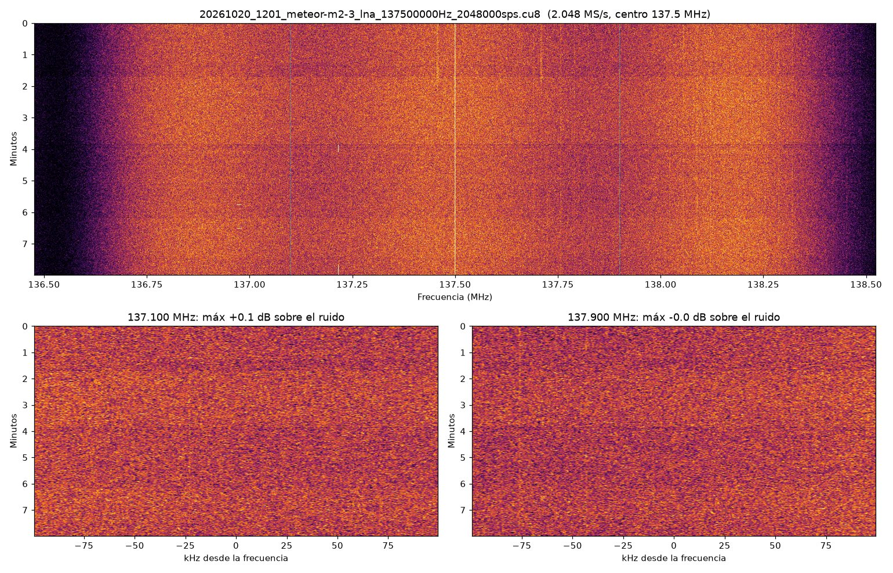
There was no signal at 137.9 MHz, which is expected at 9.8°. What gave the problem away was the raw sample level:
| Recording | RTL-SDR gain | LNA | Sample std. dev. (8-bit levels) |
|---|---|---|---|
| Meteor M2-3, 2026-10-02 | 38.6 dB | none | 7.8 |
| Meteor M2-4, 2026-10-03 | 38.6 dB | none | 8.5 |
| This test, 2026-10-20 | 29.7 dB | bias tee on | 0.97 |
9 dB less gain on the dongle would explain dropping to about 3, not to 1. With a working LNA the level should have gone far above the earlier recordings: the dongle was mostly seeing its own noise.
Bias tee off vs on
rtl_power has a -T option that turns the bias tee on while it measures, so I ran the same
134–141 MHz sweep twice, once without and once with it, plus an FM sweep with the bias tee on:
drivers/rtlsdrblog-V1.4.0/x64/rtl_power.exe -f 134M:141M:10k -i 2 -e 8 -g 29.7 scans/lna_off.csv
drivers/rtlsdrblog-V1.4.0/x64/rtl_power.exe -f 134M:141M:10k -i 2 -e 8 -g 29.7 -T scans/lna_on.csv
drivers/rtlsdrblog-V1.4.0/x64/rtl_power.exe -f 88M:108M:20k -i 1 -e 3 -g 29.7 -T scans/lna_fm_check.csv
python tools/comparar_lna.py scans/lna_off.csv scans/lna_on.csv scans/lna_fm_check.csv --en
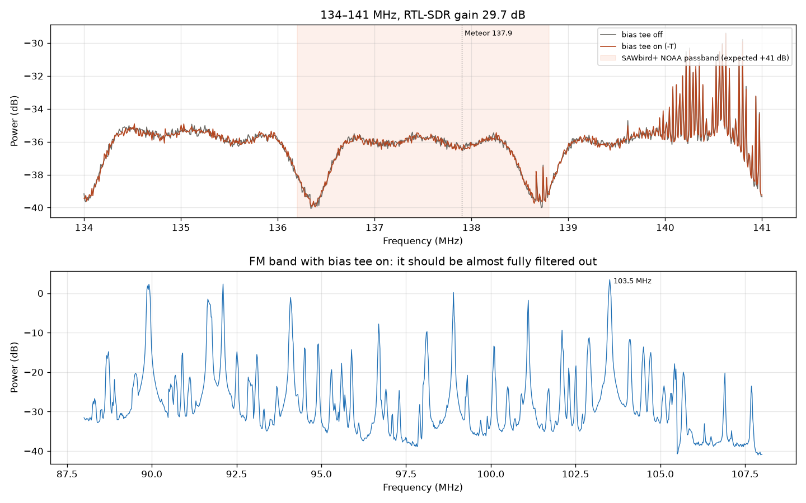
The two 134–141 MHz curves sit on top of each other (−36.1 and −36.2 dB in the 137 MHz band):
the bias tee was not powering the board. The shaded band is the SAWbird passband I expected at
the time. The dips at 136.3 and 138.7 MHz are the edges of rtl_power's 2.33 MHz hops, not a
filter. I turned the bias tee off again with rtl_biast -b 0.
Attempt 2: power from USB
I connected a USB-A to USB-C cable to the board, and its blue LED lit up. The bias tee stays off: the board must not get power from two sources at once.
The same sweep at the same 29.7 dB of gain jumped from −36.1 to −0.7 dB in the 137 MHz band. That is about 35 dB more: the LNA was now amplifying, and the dongle was saturating. To see the real shape of the filter, I swept 120–160 MHz and the FM band with the dongle's gain at 0 and 8.7 dB:
drivers/rtlsdrblog-V1.4.0/x64/rtl_power.exe -f 120M:160M:20k -i 2 -e 6 -g 8.7 scans/lna_usb_120-160_g8.7.csv
drivers/rtlsdrblog-V1.4.0/x64/rtl_power.exe -f 88M:108M:20k -i 1 -e 3 -g 0 scans/lna_usb_fm_g0.csv
python tools/superponer_power.py scans/lna_usb_banda_en.png "120–160 MHz with the LNA powered by USB" scans/lna_usb_120-160_g0.csv "RTL-SDR gain 0 dB" scans/lna_usb_120-160_g8.7.csv "RTL-SDR gain 8.7 dB" --en
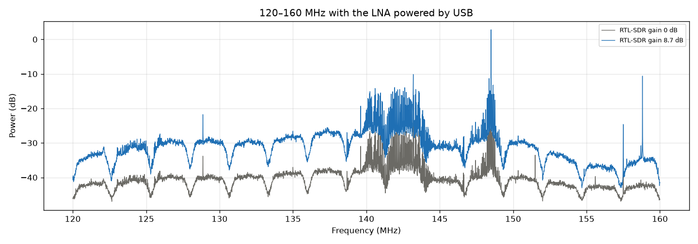
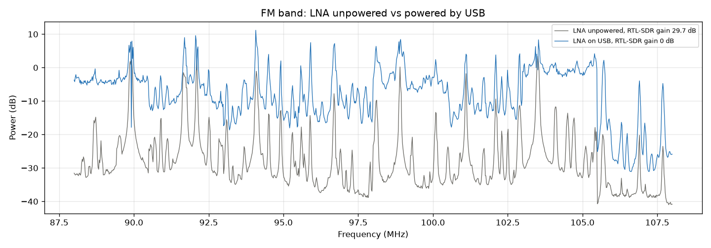
| Observation | SAWbird+ NOAA (what I expected) | This board (measured) |
|---|---|---|
| Passband | 2.6 MHz around 137.5 MHz | Broad: the noise floor rises from about 134 to 150 MHz |
| Out-of-band signals | Strongly rejected | Strong signals at 139.5–144 MHz and 148.5 MHz come through |
| FM band (88–108 MHz) | Almost fully blocked | With the LNA on and the dongle at 0 dB, FM peaks reach +11 dB, as high as with the LNA off and the dongle at 29.7 dB |
The filter is far wider than a SAW filter and lets FM through. It still works at 137 MHz, but the dongle's gain has to come down a lot so the strong out-of-band signals do not overload it.
Choosing the dongle's gain
I measured the 137.0–138.2 MHz noise floor with rtl_power at each gain step, and recorded
2 seconds of IQ at some of them to see how many samples hit the 8-bit limits (0 or 255).
rtl_power rounds to the nearest tuner step, so 4.9 and 9.7 dB become 3.7 and 8.7 dB.
for g in 0 3.7 8.7 14.4 16.6 19.7 25.4 29.7; do drivers/rtlsdrblog-V1.4.0/x64/rtl_power.exe -f 136.6M:138.6M:5k -i 1 -e 3 -g $g scans/lna_usb_gain_$g.csv; done
| RTL-SDR gain | Noise floor at 137 MHz (rtl_power) |
IQ std. dev. (8-bit levels) | Clipped samples |
|---|---|---|---|
| 0 dB | −32.9 dB | ||
| 3.7 dB | −25.8 dB | ||
| 8.7 dB | −21.5 dB | ||
| 14.4 dB | −17.0 dB | 12.2 | 0 % |
| 16.6 dB | −13.0 dB | ||
| 19.7 dB | −9.6 dB | 28.6 | 0.014 % |
| 25.4 dB | −5.5 dB | 47.4 | 1.07 % |
| 29.7 dB | −3.0 dB | 62.3 | 4.35 % |
For comparison, without the LNA the recordings at 38.6 dB had a standard deviation of about 8. Up to 19.7 dB the noise floor rises step by step with the gain. That means the noise being measured comes from the LNA, as it should. From 25.4 dB the steps shrink and samples start to clip. I picked 16.6 dB: between 14.4 and 19.7, with margin for the strong FM.
The 43° pass with the LNA (20 October, 22:36)
I scheduled the evening Meteor M2-3 pass (22:38–22:48, 43° maximum) with the LNA on USB, the dongle at 16.6 dB and the antenna at the window. When the recording ended, the task extracted 137.9 MHz and decoded it with SatDump by itself (guide 3, step 5):
.\tools\programar_paso.ps1 -Nombre meteor-m2-3-lna -Inicio '2026-10-20 22:36' -Minutos 14 -Ganancia 16.6
| Stage | Time | Result |
|---|---|---|
| Recording | 22:36–22:50 | 14 min, 3.2 GB, no errors |
| Analysis and extraction | 22:50–22:55 | 137.9 MHz: max +0.6 dB; 137.1 MHz: max +0.1 dB. No clear signal |
| SatDump LRPT 72k | 22:55–22:56 | Viterbi : NOSYNC, BER ≈ 0.41 (pure noise), 0 lines |
| SatDump LRPT 80k (retry) | 22:56–22:57 | Same: NOSYNC, 0 lines, no images |
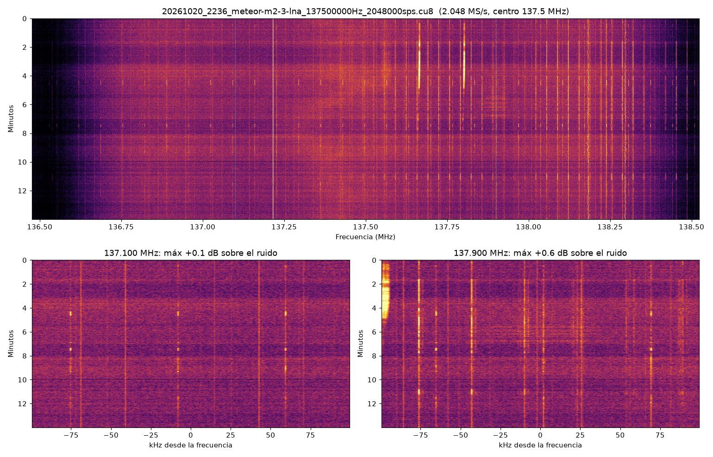
The automation worked end to end, but the satellite never showed up: there is no ~120 kHz LRPT band at 137.9 MHz, only narrow carriers that the LNA now amplifies too. It is the third Meteor pass in a row with no signal, including a 70° pass on 2 October recorded without the LNA. The likely causes:
- Meteor M2-3 is a weak target. According to the Signal Identification Wiki, its antenna did not deploy correctly. Meteor M2-4 does not have that problem.
- The antenna sits indoors, behind glass and a safety net, surrounded by buildings. A V dipole is only just enough for LRPT even under open sky.
- Local interference, possibly from the laptop or the LNA's USB power.
Decisions
Friday 23: Meteor M2-4 at 89°, outdoors
Meteor M2-4 passes almost straight overhead on Friday 23 at 16:52–17:03 (89° at 16:57), in daylight, so a successful decode would also give a color image. I will use the same setup, with the antenna outdoors instead of behind the window, so the result separates the antenna location from the rest of the chain. The recording and the decoding are scheduled:
.\tools\programar_paso.ps1 -Nombre meteor-m2-4-lna -Inicio '2026-10-23 16:50' -Minutos 14 -Ganancia 16.6
If it does not sync at 137.9 MHz but the log shows a signal at 137.1 MHz, I can decode it by hand
(PowerShell blocks .ps1 scripts by default, so this runs it with the policy bypassed just for
that run):
powershell -ExecutionPolicy Bypass -File .\tools\decodificar_paso.ps1 -Archivo grabaciones\20261023_1650_meteor-m2-4-lna_137500000Hz_2048000sps.cu8 -Extraer 137.1e6
Parts for an FM filter
Because the LNA's filter lets FM through and forces the dongle's gain down, I ordered the cables and adapters needed to insert an FM band-stop filter into the chain:
| Part | Quantity | Price (USD) |
|---|---|---|
| SMA male to SMA male adapter, gold-plated brass | 5 | 3.73 |
| SMA male to SMA male RG316 cable, 2 m | 5 | 18.21 |
| SMA male to SMA male RG316 cable, 30 cm | 5 | 5.39 |
| Total | 27.33 |
First signal from Meteor M2-4 (29 October, 03:59)
With the parts installed, the chain is now: antenna → LNA RFin → RFout → FM band-stop filter → dongle. The filter goes after the LNA: that way its loss does not hurt the noise figure, and it protects the dongle from the FM that the LNA amplifies. The V dipole sits outside the window, which faces southwest (210°), stuck to the glass with the mounting kit. The first recording with the filter came out empty because I had connected the LNA backwards (antenna on RFout). Once fixed, the floor at 137 MHz went back to about −16 dB with the dongle at 14.4 dB, the same as before the filter. I scheduled the night pass of Meteor M2-4:
powershell -ExecutionPolicy Bypass -File .\tools\programar_paso.ps1 -Nombre meteor-m2-4-filtro -Inicio '2026-10-29 03:59' -Minutos 15 -Ganancia 14.4
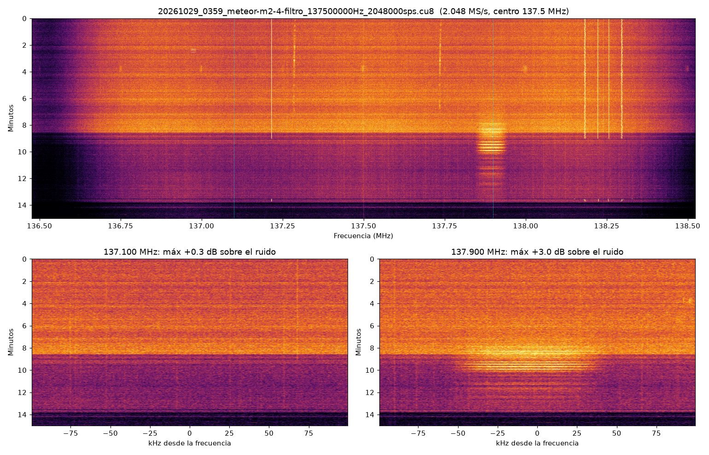
| Minutes | Time | Satellite | In the waterfall |
|---|---|---|---|
| 0–7 | 03:59–04:06 | To the north (azimuth 18–40°), rising to 65° | Nothing: the building blocks the whole northern sky |
| 8–10 | 04:07–04:09 | Overhead (77°), heading south | The LRPT band at 137.9 MHz, the best part of the pass |
| 11–13 | 04:10–04:12 | To the south (azimuth 188–190°), from 25° down to 11° | The band, fading out |
- The satellite shows up for the first time: a band about 100 kHz wide at 137.9 MHz, with horizontal fading stripes. With a linearly polarized antenna, the signal rises and falls every few seconds.
- From the window I only hear the southern half of the pass.
- There is local noise. Until minute 8.6 the floor was several dB higher, with narrow carriers at 137.22, 137.28, 137.74 and 138.18–138.30 MHz. All of it switched off at once at 04:07:36, so it comes from a single device I have not identified yet.
- SatDump did not sync. I tried the 72k and 80k pipelines, and also just the clean stretch
(minutes 8.5 to 13.5):
Viterbi : NOSYNC, 3.7 dB peak SNR and 0 lines.
Validating the decoder with a reference recording
No pass had produced an image so far, which left a question open: was the failure only the signal,
or also the decoding chain (analizar_iq.py --extraer → .cs16 → SatDump)? Ruling out the chain
takes a recording that does decode. The
Signal Identification Wiki
links one on Mega: LRPT_16-29-02_137900kHz.zip (58 MB). It holds a 16-bit stereo IQ WAV at
187.5 kS/s, 105 s long, recorded in 2018 from the original Meteor M2. I saved it to
referencia\lrpt_sigid\.
1. SatDump directly. I stripped the WAV's 44-byte header to leave raw cs16 samples and decoded them:
tail -c +45 referencia/lrpt_sigid/LRPT_16-29-02_137900kHz.wav > referencia/lrpt_sigid/ref_187500.cs16
cd satdump
.\satdump.exe meteor_m2_lrpt baseband ..\referencia\lrpt_sigid\ref_187500.cs16 ..\referencia\lrpt_sigid\directo_m2 --samplerate 187500 --baseband_format cs16 --fill_missing
It gave 640 lines. Mind the pipeline: meteor_m2_lrpt is for the old satellite, which
transmitted without interleaving. With meteor_m2-x_lrpt, the one for M2-3/M2-4, the Viterbi locks
(BER 0.007) but the deframer does not, and no image comes out.
2. The full chain. tools\simular_cu8.py turns the reference into a .cu8 just like ours: it
resamples it to 2.048 MS/s, shifts it to +400 kHz (137.9 MHz with the dongle at 137.5 MHz) and
quantizes it to 8 bits. Then it goes through the same steps as a real recording:
python tools\simular_cu8.py referencia\lrpt_sigid\LRPT_16-29-02_137900kHz.wav referencia\lrpt_sigid\ref_simulada_137500000Hz_2048000sps.cu8
python tools\analizar_iq.py referencia\lrpt_sigid\ref_simulada_137500000Hz_2048000sps.cu8 --centro 137.5e6 --sr 2048000 --extraer 137.9e6
cd satdump
.\satdump.exe meteor_m2_lrpt baseband ..\referencia\lrpt_sigid\ref_simulada_137500000Hz_2048000sps_137.900MHz_512k.cs16 ..\referencia\lrpt_sigid\cadena --samplerate 512000 --baseband_format cs16 --fill_missing
It gave 656 lines and the color images. The chain works.
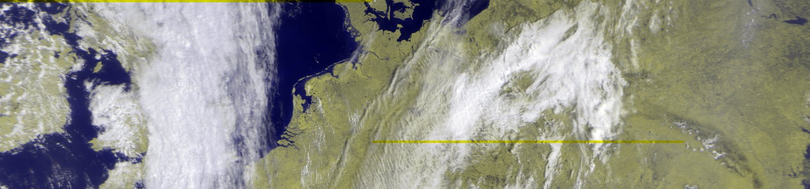
How much signal it takes
With --ruido the script adds white noise. That let me find where decoding stops, measured with
the same number analizar_iq.py reports for our recordings:
| Added noise (rms, u8 counts) | analizar_iq at 137.9 MHz |
SatDump peak SNR | Lines |
|---|---|---|---|
| none | +38.8 dB | 656 | |
| 25 | +5.5 dB | 584 | |
| 35 | +3.8 dB | 5.4 dB | 512 |
| 45 | +2.7 dB | 48 | |
| 55 | +2.0 dB | 1.0 dB | 0 |
Decoding drops out around +3 dB in analizar_iq, which matches the threshold it already uses
to report "SEÑAL DETECTADA". The 03:59 pass reached +3.0 dB and a 3.7 dB peak SNR in SatDump,
only briefly and with fading. It fell just under the threshold: it was short by about
1.5–2 dB, not a software problem. The margin has to come from the antenna and the location: open
sky, with no buildings or devices nearby.
Powering the LNA without adding noise
Before heading out I measured the floor at 137 MHz with different power sources for the LNA. I used the same antenna and 14.4 dB on the dongle:
./drivers/rtlsdrblog-V1.4.0/x64/rtl_power.exe -f 136.6M:138.6M:5k -i 1 -e 3 -g 14.4 ./scans/prueba_laptop.csv
| LNA power | Floor | Carriers above the floor |
|---|---|---|
| Laptop on a high-power Dell USB-C dock that also charged it (night of 28/10) | −15.5 dB | none to speak of |
| USB wall charger | −18.1 dB | 138.151 MHz, +14 dB |
| Laptop USB on battery, no dock or charger | −27.5 dB | none above +3 dB |
- The wall charger adds a carrier at 138.151 MHz, which goes away when it is unplugged. It is no good for recording passes.
- On battery the floor sits about 12 dB lower than the night before, when the laptop was on the dock. That noise most likely came from the dock or its power supply. It would explain why the 03:59 pass, recorded that way, fell just under the threshold. It still needs confirming by measuring with and without the dock in the same spot.
- The USB-A to USB-C cable makes no difference: the home cable and the car cable gave the same result.
- The board does not take power from the bias tee (attempt 1), so the bias tee stays off.
First image: Meteor M2-4 from the Sporting (29 October, 16:20)
I could not make it to the Concón dunes in time, so I recorded from the Valparaíso Sporting Club in Viña del Mar: open sky, away from buildings. The chain: antenna → LNA (on the laptop's USB, on battery) → FM filter → dongle at 14.4 dB. I started the recording by hand at 16:20:
powershell -ExecutionPolicy Bypass -File .\tools\grabar_paso.ps1 -Nombre meteor-m2-4-concon -Minutos 18 -Ganancia 14.4
The pass rose in the southeast, peaked at 45° in the east at 16:28 and set in the north.
The dipole was opened out straight (180°) and horizontal, on a tripod 1.5 m off the ground. The LNA and the filter hang from the tripod, and the laptop sat on a blanket about a meter away.
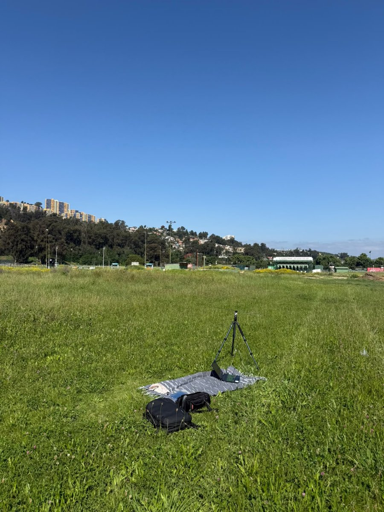
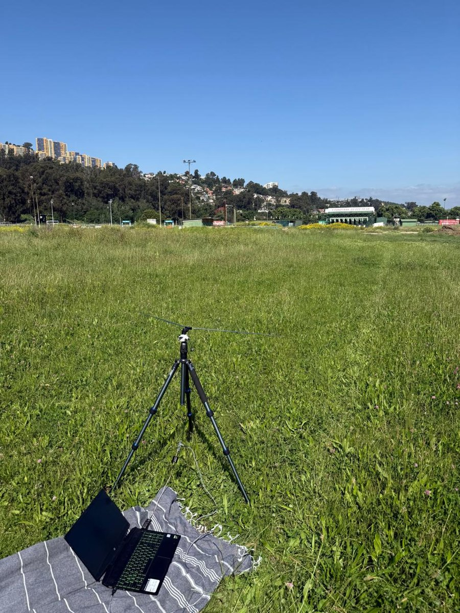
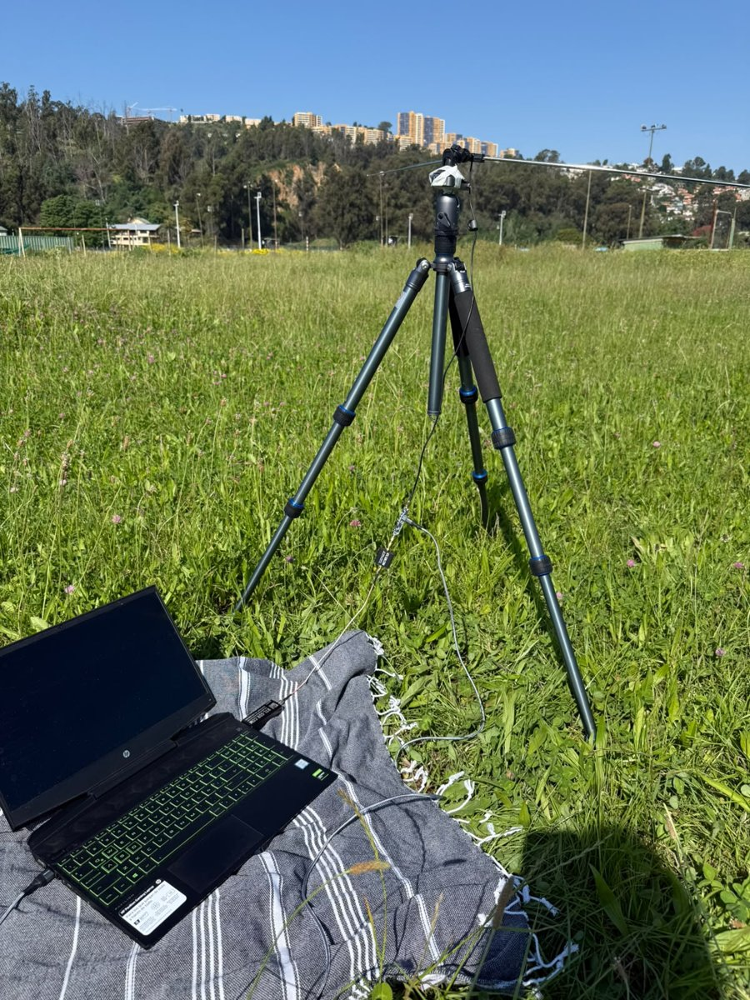
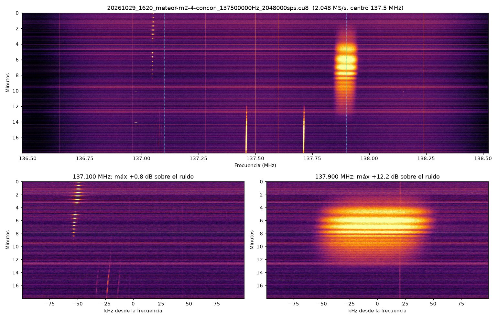
| 03:59 at home | 16:20 at the Sporting | |
|---|---|---|
Max at 137.9 MHz (analizar_iq) |
+3.0 dB | +12.2 dB |
| Time above +3 dB | 0 min | 8.5 min |
| SatDump LRPT 72k | NOSYNC, 0 lines | Viterbi SYNCED, ~2900 lines per channel |
| Images | none | 38 |
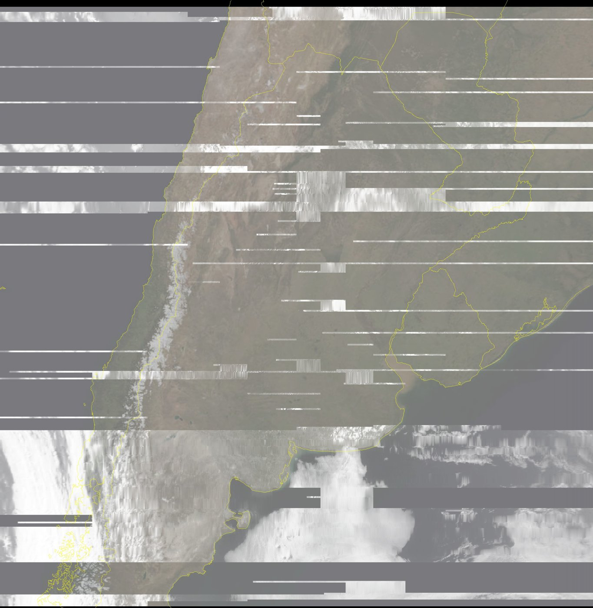
The best image is MSU-MR (Filled)\msu_mr_rgb_MSA_corrected_map.png, with country borders overlaid.
SatDump outputs it south up because the satellite was heading north; the one above is rotated 180°.
It shows the Chilean coast down to Chiloé, the snowy Andes, Argentina from Paraguay to the Valdés
Peninsula, Uruguay and the Río de la Plata.
The 80k pipeline did not sync on the same recording: Meteor M2-4 was transmitting at 72k.
Why there are gaps
The signal was more than enough to decode, but the image has many missing lines, which SatDump fills in gray. There are three likely causes, none verified yet:
- Fading. In the waterfall the signal drops out every 30 to 60 seconds. The dipole is linearly polarized, and at times it barely picks up the satellite's circular polarization.
- Very low recording level. The samples have a standard deviation of only 2 to 3 of the 256 levels of the 8-bit ADC; at home it was 13.8. Outdoors there is hardly any noise or FM, and with the FM filter after the LNA the dongle's gain can go up to about 30 dB.
- Possibly dropped samples. Recording 1080 s of signal took 1101.6 s; at home, plugged in, the overhead is about 2 s. On battery, Windows may save power and the dongle may drop blocks of data.
Next steps
- Add the result of Friday's 89° pass here.
- On the next open-sky pass: measure with
rtl_poweron site and raise the gain to about 30 dB, and set Windows to "Best performance" to rule out dropped samples. - Confirm whether the Dell dock is what adds noise at home, by measuring with and without it.
- Try a circularly polarized antenna (QFH or turnstile) to get rid of the fading.
- Move the LNA to the antenna end of the coax, where it improves the noise figure the most.